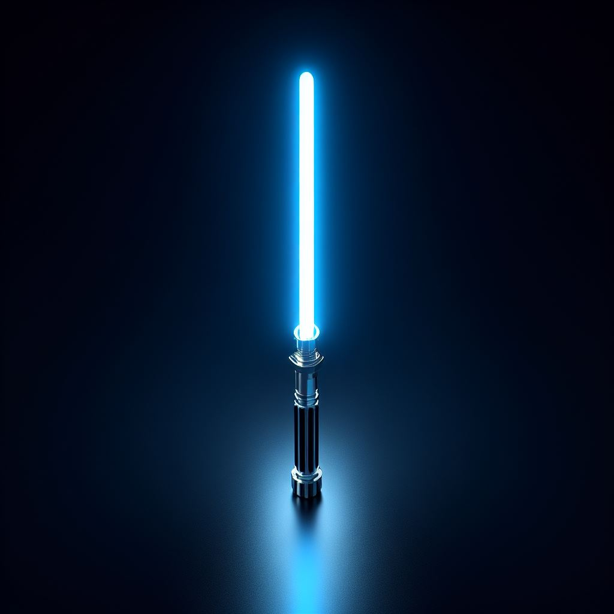
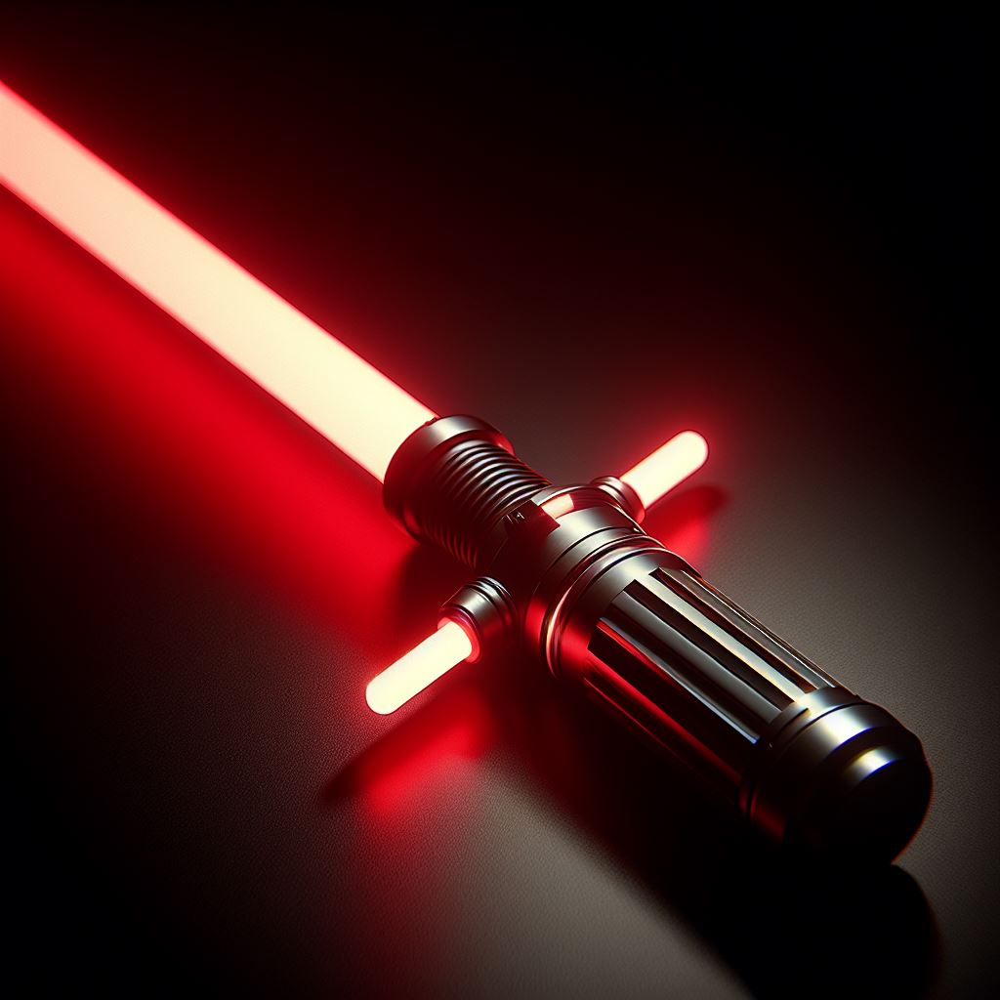
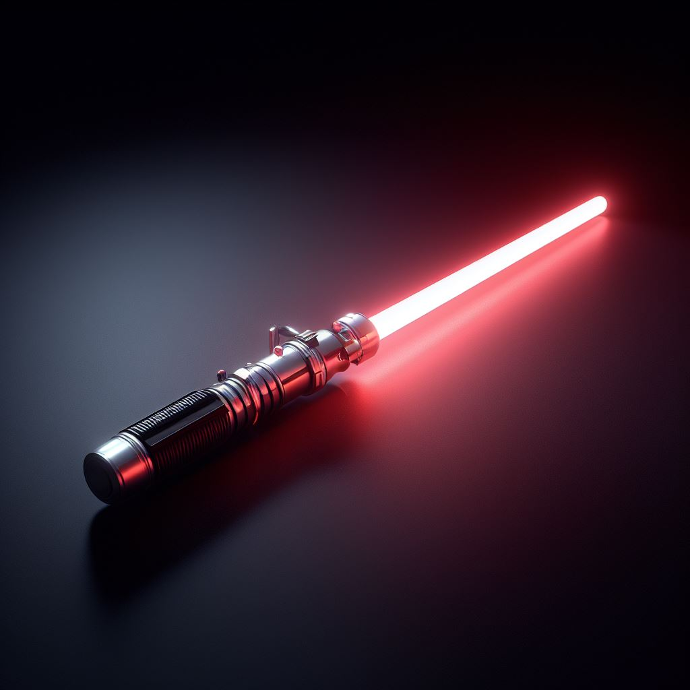

About their structure
Lightsabers are not made by simply pressing a button. To create a lightsaber, one needs a kyber crystal. Kyber crystals are found on the planet Ilum, and can only be mined by younglings. Once a kyber crystal is obtained, a Jedi or Sith must use the Force to connect with the crystal and Bendu to shape it into a proper lightsaber. The kyber crystal is then placed within the lightsaber's hilt, where it serves as both the weapon's power source and its focus.
The main types
The mechanical construction of a lightsaber is relatively straightforward, but its power comes from the rare kyber crystal contained within. Wielding a lightsaber is less like holding a sword than it is directing a current of power. This bond between the Jedi and the lightsaber explains why specific blades have become venerated. Over the years, many lightsaber types - and specific lightsaber combat forms - have been seen.
|  |
The standard bladeThe most famous lightsaber type is the standard blade. As the kyber crystal does the hard work of focusing the plasma, even non-Jedi can use all lightsabers - but only a Force user can operate them to their full potential. Similarly, single-bladed lightsabers can be constructed from almost anything |
Dual-phase lightsaberA very unusual and highly versatile type. The dual-phase lightsaber possesses two kyber crystals. At the flick of a switch, Vader can rotate the kyber crystals into a new alignment to change the length of his blade. This can be useful in taking an opponent by surprise. |
|
 |
Double-bladed lightsaber/switchbladeit has an extra long hilt and incorporates multiple kyber crystals. One unusual double-bladed lightsaber is known as a switchblade. Here, the two blades can be folded up so they are side-by-side, or switched down into the traditional double-bladed configuration. |
|  |
Crossguard lightsaberAn interesting design incorporating three blades. Another variant of the crossguard lightsaber has been seen in the High Republic Era, wielded by Stellan Gios. As seen in the High Republic Era, the crossguard lightsaber was very popular when the Jedi were at the peak of their power. Many High Republic Jedi have been revealed as crossguard wielders. |
DarksaberA unique lightsaber, created a thousand years ago by Tarre Vizsla, the first Mandalorian to join the Jedi Knights. Although the weapon is clearly related to the typical lightsaber, its energy blade is a strange, shimmering black, one that is flat rather than cylindrical, giving the Darksaber a distinctive appearance. Whoever holds the Darksaber is believed to have the right to declare themselves ruler of the Mandalorians. |
About the colors
The colors of lightsaber crystals or blades have meaning, and each hue corresponds to a different trait or aspect of the Force. Every lightsaber wielder, from Jedi temple guards to Jedi Knights and Jedi sentinels, has their own lightsaber in a color that can sometimes reveal their nature, intention and character.
BlueWhen it comes to the Jedi Order and the Sith, blue and green lightsabers are the most common. Blue has always been associated with positive qualities like truth and serenity. |
|
GreenThe second most common color for a lightsaber. Green represents growth, harmony, and nature. |
 |
|  |
RedRed lightsabers are often associated with the Sith or Dark Jedi, symbolising anger and determination. The Sith Code preaches that “anger, hatred, and aggression” are the way to achieve one's goals, which is likely why red became the color of choice for many Sith Lords. |
PurplePurple lightsabers are less common, but they are often seen as a sign of nobility and wisdom. In the Star Wars universe, Mace Windu is the only Jedi to ever wield a purple lightsaber, and he is considered one of the wisest members of the Order. |
|
YellowYellow lightsabers are also relatively rare, but they represent the power of the sun and hope for the future. For example Ahsoka Tano wields a yellow lightsaber to symbolise her new role as a leader and protector. |
|
orangeorange lightsabers are associated with ambition, creativity, and resourcefulness. Jedi Master Luminara Unduli is known for her orange lightsaber, which she uses to great effect in battle. |
|
SilverFinally, silver lightsabers are seen as a sign of purity and peace. Obi-Wan Kenobi uses a silver lightsaber when he faces off against his former apprentice, Darth Vader. This represents the end of Kenobi's time as a Jedi and the beginning of his new role as a protector of peace. |